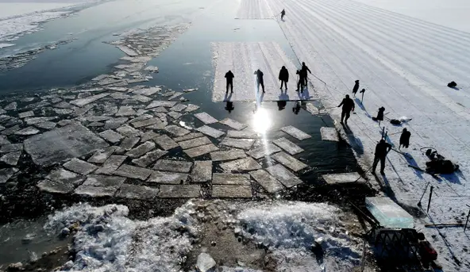
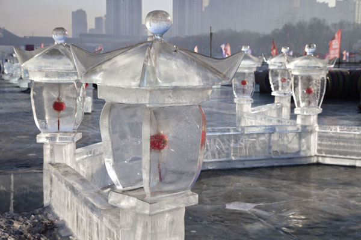
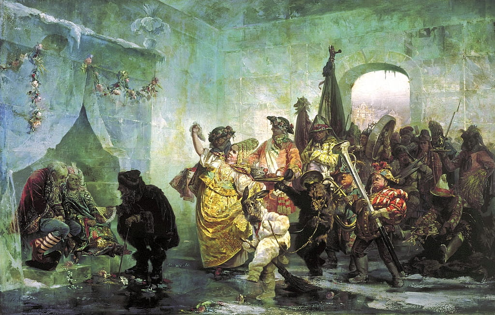

Les Inuits

La sculpture sur glace est un art qui remonte à des temps immémoriaux. En effet, les Inuits d'Alaska sont les premiers à avoir tailler la glace sous forme d'igloos il y a environ 4000 ans.
Les Chinois, 1/2
Vers -600, les fermiers chinois du nord-ouest de la Chine inondait leur champs d'eau, attendait qu'elle gèle, collectait les blocs de glace, puis les rangeaient dans des lieux isolés pour conserver les fruits de mer.
Les Chinois, 2/2
Vers 1600, Des pêcheurs chinois de la province de Heilongjiang débutèrent la sculpture de lanternes de glace.
L'impératrice
Vers 1739, l'impératrice Anna Ivanovna ordonna la construction d'un palais de glace, fait de l'eau de la rivière Neva, dont on conserve un tableau du peintre Valery Ivanovich Jacobi.